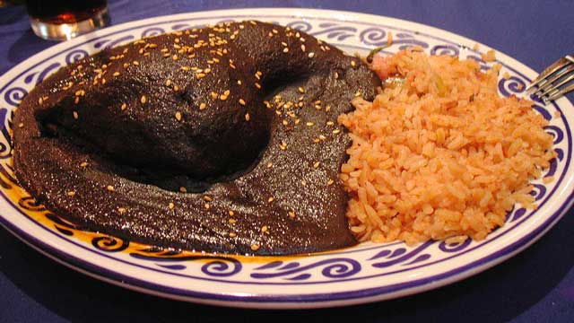

¿Qué es el "Mole"?
El mole es una especialidad cultural culinaria de la ciudad de Puebla. Originalmente consistía principalmente en una salsa de una gran variedad de ingredientes vertida sobre piezas de guajolote, nombre que se le da en México al pavo doméstico, aunque actualmente es común su uso con pollo u otras carnes, siendo uno de los platillos más representativos de Mexico.
Ingredientes para el "Mole":
- 7 Chiles anchos.
- 6 Chiles mulatos.
- 6 Chiles pasilla.
- 3 Chiles chipotles.
- 1 Cebolla chica.
- 2-3 Jitomates.
- 3 dientes Ajo.
- 100 g Pasitas.
- 100 g Cacahuate sin sal.
- 100 g Almendras.
- 50 g Semilla de calabaza.
- 50 g Ajonjolí.
- 2 Tortillas duras.
- 1 pza. Bolillo duro.
- 1 Plátano macho, maduro.
- 1 Rajita de canela.
- 3 Clavos de olor.
- 1/2 cdta Anís.
- 1/2 cono Piloncillo.
- 1 tableta Chocolate de mesa (Ibarra).
- 1 L. Agua.
- 2 Pastillas de consomé de verduras.
- 1 cdta. Pimienta negra.
- Aceite de oliva o aguacate.
- Sal de mar.

Preparacion:
- Limpiar y desvenar los chiles. En un comal asar por ambos lados cuidando que no se quemen para evitar amargar la salsa. Una vez asados meterlos a una ollita con suficiente agua hirviendo, dejar remojar por 20 minutos para suavizar. Ya que estén suaves licuar y reservar.
- Hervir en otra olla jitomate, cebolla y ajo.
- En un sartén con suficiente aceite vegetal dorar los espesantes de la pasta: pasitas, semillas de calabaza, cacahuate, almendras, la tortilla trozada en cuartos, el bolillo en rebanadas y plátano macho en rodajas. Ya que están quemados, licuar junto con la canela, clavo, anís, pimienta, ajonjolí e ir agregando poco a poco agua hasta obtener una mezcla homogénea.
- En una cazuela (preferentemente de barro) agregar aceite vegetal, la tableta de chocolate, el piloncillo y las pastillas de consomé vegetal; mover constantemente hasta que se deshagan. Una vez que la consistencia sea liquida agregar la espesadura (paso 3) y las salsa de chiles, utilizando un colador. Mezclar muy bien y constantemente las tres partes. Sazonar una vez más si es necesario. No dejar de mover por unos minutos hasta que entre al primer hervor a fuego bajo. (usar de preferencia palita de madera).
Caja de comentarios